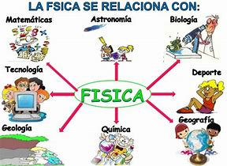
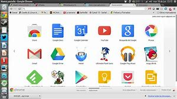

El cálculo diferencial es una parte del análisis matemático que consiste en el estudio de cómo cambian las funciones cuando sus variables cambian. El principal objeto de estudio en el cálculo diferencial es la derivada. Una noción estrechamente relacionada es la de una diferencia El estudio del cambio de una función es de especial interés para el cálculo diferencial, en concreto el caso en el que el cambio de las variables es infinitesimal, esto es, cuando dicho cambio tiende a cero (se hace tan pequeño como se desee). Y es que el cálculo diferencial se apoya constantemente en el concepto básico del límite. El paso al límite es la principal herramienta que permite desarrollar la teoría del cálculo diferencial y la que lo diferencia claramente del álgebra. Desde el punto de vista matemático de las funciones y la geometría, la derivada de una función en un cierto punto es una medida de la tasa en la cual una función cambia conforme un argumento se modifica. Esto es, una derivada involucra, en términos matemáticos, una tasa de cambio. Una derivada es el cálculo de las pendientes instantáneas de {\displaystyle f(x)} f(x) en cada punto {\displaystyle x} x. Esto se corresponde a las pendientes de las tangentes de la gráfica de dicha función en sus puntos (una tangente por punto); Las derivadas pueden ser utilizadas para conocer la concavidad de una función, sus intervalos de crecimiento, sus máximos y mínimos. La inversa de una derivada se llama primitiva, antiderivada o integral indefinida.
Diferenciación y diferenciabilidad
Una función de una variable es diferenciable en un punto {\displaystyle x} x si su derivada existe en ese punto; una función es diferenciable en un intervalo si lo es en cada punto {\displaystyle x} x perteneciente al intervalo. Si una función no es continua en c, entonces no puede ser diferenciable en c; sin embargo, aunque una función sea continua en c, puede no ser diferenciable. Es decir, toda función diferenciable en un punto c es continua en c, pero no toda función continua en c es diferenciable en c (como f(x) = |x| es continua, pero no diferenciable en x = 0)..

La física es la ciencia natural que se encarga del estudio de la energía, la materia, el tiempo y el espacio, así como las interacciones de estos cuatro conceptos entre sí. El término proviene del lat. physica, y este del gr. τὰ φυσικά, neutro plural de φυσικός, 'natural, relativo a la naturaleza'.La física es una de las más antiguas disciplinas académicas, tal vez la más antigua, ya que la astronomía es una de sus subdisciplinas. En los últimos dos milenios, la física fue considerada parte de lo que ahora llamamos filosofía, química, y ciertas ramas de la matemática y la biología, pero durante la Revolución Científica en el siglo XVII surgió para convertirse en una ciencia moderna, única por derecho propio. Sin embargo, en algunas esferas como la física matemática y la química cuántica, los límites de la física siguen siendo difíciles de distinguir.Esta disciplina incentiva competencias, métodos y una cultura científica que permiten comprender nuestro mundo físico y viviente, para luego actuar sobre él. Sus procesos cognitivos se han convertido en protagonistas del saber y hacer científico y tecnológico general, ayudando a conocer, teorizar, experimentar y evaluar actos dentro de diversos sistemas, clarificando causa y efecto en numerosos fenómenos. De esta manera, la física contribuye a la conservación y preservación de recursos, facilitando la toma de conciencia y la participación efectiva y sostenida de la sociedad en la resolución de sus propios problemas.

La ecología es la rama de la biología que estudia las relaciones de los diferentes seres vivos entre sí y con su entorno: «la biología de los ecosistemas» (Margalef, 1998, p. 2). Estudia cómo estas interacciones entre los organismos y su ambiente afectan a propiedades como la distribución o la abundancia. En el ambiente se incluyen las propiedades físicas y químicas que pueden ser descritas como la suma de factores abióticos locales, como el clima y la geología, y los demás organismos que comparten ese hábitat (factores bióticos). Los ecosistemas están compuestos de partes que interactúan dinámicamente entre ellas junto con los organismos, las comunidades que integran, y también los componentes no vivos de su entorno. Los procesos del ecosistema, como la producción primaria, la pedogénesis, el ciclo de nutrientes, y las diversas actividades de construcción del hábitat, regulan el flujo de energía y materia a través de un entorno. Estos procesos se sustentan en los organismos con rasgos específicos históricos de la vida, y la variedad de organismos que se denominan biodiversidad. La visión integradora de la ecología plantea el estudio científico de los procesos que influyen en la distribución y abundancia de los organismos, así como las interacciones entre los organismos y la transformación de los flujos de energía. La ecología es un campo interdisciplinario que incluye a la biología y las ciencias de la Tierra.
Los antiguos filósofos griegos, como Hipócrates y Aristóteles, sentaron las bases de la ecología en sus estudios sobre la historia natural. Los conceptos evolutivos sobre la adaptación y la selección natural se convirtieron en piedras angulares de la teoría ecológica moderna transformándola en una ciencia más rigurosa en el siglo XIX. Está estrechamente relacionada con la biología evolutiva, la genética y la etología. La comprensión de cómo la biodiversidad afecta a la función ecológica es un área importante enfocada en los estudios ecológicos. Los ecólogos tratan de explicar:
Los procesos de la vida, interacciones y adaptaciones
El movimiento de materiales y energía a través de las comunidades vivas
El desarrollo sucesional de los ecosistemas
La abundancia y la distribución de los organismos y de la biodiversidad en el contexto del medio ambiente.

En la ingeniería de software se denomina aplicación web a aquellas herramientas que los usuarios pueden utilizar accediendo a un servidor web a través de internet o de una intranet mediante un navegador. En otras palabras, es un programa que se codifica en un lenguaje interpretable por los navegadores web en la que se confía la ejecución al navegador.Las aplicaciones web son populares debido a lo práctico del navegador web como cliente ligero, a la independencia del sistema operativo, así como a la facilidad para actualizar y mantener aplicaciones web sin distribuir e instalar software a miles de usuarios potenciales. Existen aplicaciones como los correos web, wikis, blogs, tiendas en línea y la propia Wikipedia que son ejemplos bastante conocidos de aplicaciones web.
El idioma inglés (English [ˈɪŋɡlɪʃ] o English language) es una lengua germánica occidental que surgió en los reinos anglosajones de Inglaterra y se extendió hasta el Norte en lo que se convertiría en el sudeste de Escocia, bajo la influencia del Reino de Northumbria.El inglés es el tercer idioma nativo más extendido en el mundo, después del chino mandarín y el español. Es el segundo idioma más aprendido y es el idioma oficial o uno de los idiomas oficiales en casi 60 estados soberanos.
Una aplicación móvil, aplicación, apli1 o app (acortamiento del inglés application) , es una aplicación informática diseñada para ser ejecutada en teléfonos inteligentes, tabletas y otros dispositivos móviles y que permite al usuario efectuar una tarea concreta de cualquier tipo —profesional, de ocio, educativas, de acceso a servicios, etc.—, facilitando las gestiones o actividades a desarrollar.Por lo general, se encuentran disponibles a través de plataformas de distribución, operadas por las compañías propietarias de los sistemas operativos móviles como Android, iOS, BlackBerry OS, Windows Phone, entre otros. Existen aplicaciones móviles gratuias u otras de pago, donde en promedio el 20 a 30 % del coste de la aplicación se destina al distribuidor y el resto es para el desarrollador.El término app se volvió popular rápidamente, tanto que en 2010 fue listada como la palabra del año de la American Dialect Society.
Al ser aplicaciones residentes en los dispositivos están escritas en algún lenguaje de programación compilado, y su funcionamiento y recursos se encaminan a aportar una serie de ventajas tales como:7
Un acceso más rápido y sencillo a la información necesaria sin necesidad de los datos de autenticación en cada acceso.
Un almacenamiento de datos personales que, a priori, es de una manera segura.
Una gran versatilidad en cuanto a su utilización o aplicación práctica.
La atribución de funcionalidades específicas.
Mejorar la capacidad de conectividad y disponibilidad de servicios y productos (usuario-usuario, usuario-proveedor de servicios, etc.).
Un sistema operativo es un programa o conjunto de programas informáticos que gestiona el hardware de un dispositivo y administra el servicio de aplicaciones informáticas (Windows, iOS, Android, etc.).
Las aplicaciones web son herramientas alojadas en un servidor, a las que los usuarios pueden acceder desde Internet (o Intranet) mediante un navegador web genérico o específico, dependiendo del lenguaje de programación (moodle).Un servicio de alojamiento informático o web permite a organizaciones e individuos subir, alojar, gestionar o almacenar contenido en servidores físicos o virtuales. Por ejemplo: Dropbox sería una aplicación de software destinada a ser un servicio de alojamiento de archivos multiplataforma en la nube, a la cual se puede acceder a través un interfaz web o de una app.En los últimos años, los servicios de informática distribuida han permitido que las organizaciones, incluidas las educativas, puedan gestionar sus procesos, actividad y aplicaciones informáticas a través de empresas que ofrecen comercialmente software como servicio (SaaS) alojado en un centro de datos o en servicios en la nube, y grandes redes de ordenadores pueden formar una "malla" que representa una potencia considerable (Google, Amazon, Microsoft).